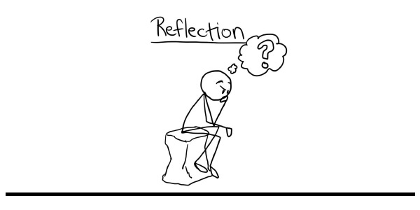

Reflection Week 1
Materi, konsep, kegiatan, dan bagian apa saja yang berjalan baik? Keberhasilan dan masalah apa yang kamu hadapi?
Minggu pertama ini saya banyak belajar mengenai dunia programming dari berbagai referensi yang sudah dilampirkan oleh hacktiv8, dalam fase perkenalan belajar mengenai html, css dan javascript, wireframing, git dan github dan lain lain, yang paling unik disini belajar bukan hanya coding saja juga melatih keahlian untuk menulis dan interpretasi setiap direction yang ada.
Hal apa saja yang terpikirkan atau tanyakan saat coding? Referensi lain apa saja yang membantumu menjawabnya?
Untuk coding sendiri pastinya banyak permasalahan-permasalahan yang dihadapi seperti code error atau hasil tidak sesuai dengan keinginan dll, untuk mengatasinya selain bertanya ke master @hacktiv8 atau referensi yang dilampirkan juga googling dari berbagai sumber seperti misalnya ketika ada sintak yang tidak jalan saya suka mencarinya di stackoverflow.com permasalah coding yang dialami terkadang suka dipecahkan disini.
Apakah kamu belajar skill, tips, dan trik baru? Apa saja?
Sejauh ini saya belajar coding melalui beberapa situs seperti codecademy.com, tutorial youtube dll, skill saya hanya berdasarkan otodidak saja seperti html, css, teknik penggunaan javascript, Jquery dll, saya sendiri ingin sekali mempelajari bahasa pemograman dan framework seperi ruby & rails, ingin menguasai node JS, javascript dll.
Seberapa kamu yakin dan lancar dengan berbagai Objectives yang ada?
Saya yakin akan bisa menyelesaikan setiap objectives yang ada, karena referensi yang dilampirkan sudah lengkap, namun alangkah lebih baiknya ditambahkan lebih banyak lagi referensi berupa video tutorial pada phase-0, karena menurut saya referensi berupa video tutorial jauh lebih ringkas dan sangat mudah dimengerti, yang paling saya sukai dalam phase ini yaitu mempelajari git & github saya ingin mahir sekali semua teknik pemakaian git & github ini, karena menurut saya ini akan membantu sekali pada saat Tim work nanti.
Kegiatan apa saja yang kamu suka dan nikmati serta yang hindari dan bosenin
Overall kegiatan pada phase-o minggu ini menyenangkan, challange yang diberikan menjadikan saya lebih termotivasi lagi untuk mempelajari pemograman ini..
Reflection Week 2
Materi, konsep, kegiatan, dan bagian apa saja yang berjalan baik? Keberhasilan dan masalah apa yang kamu hadapi?
Di minggu kedua ini materi lebih menarik membahas mengenai dasar javascript belajar logika pemograman dan lain lain, secara keseluruhan semuanya lancar, namun permasalahan yang saya hadapi ketika membuat contact list, mungkin saya harus banyak belajar lagi terutama ini teknik penggunaan CRUD di javascript
Hal apa saja yang terpikirkan atau tanyakan saat coding? Referensi lain apa saja yang membantumu menjawabnya?
Masih seputar coding terutama mengenai javascript kalau referensi sendri masih menggunakan stockoverflow ketika menghadapi permasalahan
Apakah kamu belajar skill, tips, dan trik baru? Apa saja?
Di minggu kedua ini saya mempelajari banyak javascript terutama penggunaan di dev tools tentunya sebagai dasar pemahaman logika pemogramannya
Seberapa kamu yakin dan lancar dengan berbagai Objectives yang ada?
saya yakin apa yang di instruksikan dari berbagai objectives sudah sesuai walaupun belum sempurna, ini adalah proses belajar dan harus terus diperbaiki
Kegiatan apa saja yang kamu suka dan nikmati serta yang hindari dan bosenin?
Semua kegiatan di minggu kedua ini saya suka karena ini seputar javascript banyak logika menantang